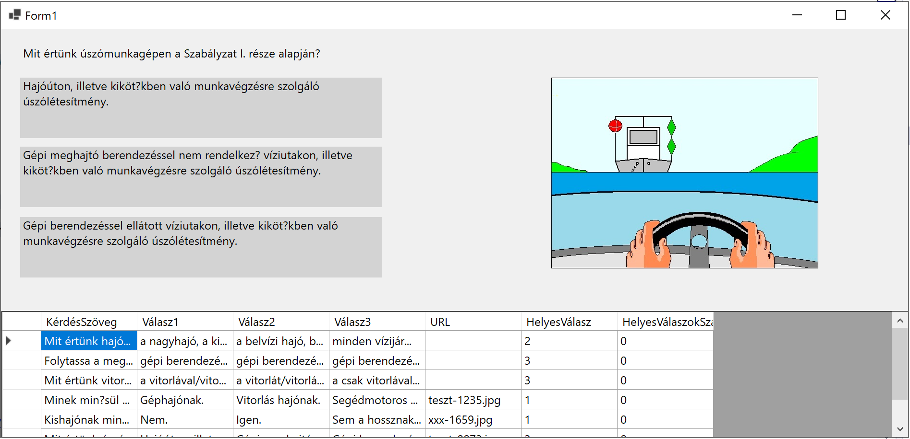

Hajós kvíz
A gyakorlaton a hatósági kisgéphajó vezetői vizsgához elérhető kérdésbankhoz készítünk felületet, amely a felhasználóval begyakoroltatja a kérdésekre a válaszokat.
A kérdéseket tartalmazó állomány CSV fájlból fogjuk beolvasni egy memóriában tárolt listába.
Ha az 1400 kérdésből mindig véletlenszerűen választanánk, nem lenne hatékony a tanulás. A program az összes kérdést tartalmazó lista mellett használ egy másik listát is, melyben az éppen gyakoroltatott 7 kérdés van. A program indításakor az első 7 kérdés kerül majd ide.
Az éppen gyakoroltatott kérdések közül kerül mindig a soron következő a képernyőre. Ha a tanuló egymás után háromszor helyesen válaszol egy kérdésre, a kérdés kikerül a gyakoroltatott kérdések listájáról, és helyébe a teljes listáról bekerül a következő kérdés.
Valahogy így fog kinézni:

Kinnduló állományok
A feladat megoldásához szükséges fájt itt találjátok:
hajozasi_szabalyzat_kerdessor_BOM.txt
Érdemes megnézni a fájlt mielőtt elkezdhetek dolgozni!
A mezőket a tabulátor (
\t) tagolja.Az első oszlop a kérdés sorszámát tartalmazza,
ezt a kérdés szövege követi,
egy kérdéshez a kérdésen felül minden esetben három lehetséges válasz tartozik,
néhány kérdéshez tartozik kép is, a következő adat a kép fájlneve,
az utolsó szám a helyes válaszlehetőségét sorszámát tartalmazza.
A képeket webről töltjük majd be.
A megoldás menete
(+/-) Töltsd Git-ről a Solution-t, amibe eddig is dolgoztál, ebbe hozd létre az új projektet HajósTeszt néven! A munka végeztével commit és push 😊
(+/-) Hozz létre egy osztályt Kérdés néven. Ez az osztály ír le egy kérdést -- tehát a fájl minden sorához létrehozunk majd egy példányt ebből az osztályból --, a példányokat pedig majd egy listában helyezzük el.
Kérdés osztály tulajdonságai képezzék le a fájlban lévő oszlopokat:
internal class Kérdés
{
public string KérdésSzöveg { get; set; }
public string Válasz1 { get; set; }
public string Válasz2 { get; set; }
public string Válasz3 { get; set; }
public string URL { get; set; }
public int HelyesVálasz { get; set; }
public int HelyesVálaszokSzáma { get; set; }
}
CSV feldolgozása
(+/-) A Form2-et bővítsük két listával:
az egyik, kérdésből álló listába az összes kérdést olvassuk majd be a fájlból,
a másik listába viszont az éppen gyakoroltatott 7 kérdés kerül majd átmásolása a teljes listából.
Ezen felül szükségünk lesz egy változóra, ami éppen feltett kérdés sorszámát tartalmazza a szűkített, 7 elemű listából. Tehát ennek a változónak az értéke 0 és 6 között lehet majd.
Valahogy így:
List<Kérdés> ÖsszesKérdés;
List<Kérdés> AktívKérdések;
int AktívKérdés=5;
Teszteléshez most alapértelmezetten 5 állítotsuk be aktív kérdésnek, mert ehhez van kép is.
(+/-) Ezután hozzunk létre egy metódust mely beolvassa a fájlból a kérdéseket. Érdemes megfigyelni hogy a KérdésBeolvasás() metódus visszatérési értéke egy kérdés típusú elemekből álló lista. Ez így szép 😊
Tip
Az alábbi kódrészletet éremes "kézzel" felépíteni, és nem bemásolni, mert ilyen biztosan lesz a következő ZH-ban.
List<Kérdés> KérdésBeolvasás()
{
List<Kérdés> kérdések = new List<Kérdés>();
StreamReader sr = new StreamReader("hajozasi_szabalyzat_kerdessor_BOM.txt", true);
while (!sr.EndOfStream)
{
string sor = sr.ReadLine() ?? string.Empty;
//A ?? azt jelenti, hogy ha az sr.ReadLine() null értékkel jön vissza, akkor legyen üres string a sor változó értéke
string[] tömb = sor.Split("\t");
if (tömb.Length != 7) continue;
//Ha nem 6 részre hasítja a sort a TAB, akkor ez egy rossz sor, megyünk a következőre
Kérdés k = new Kérdés();
k.KérdésSzöveg = tömb[1];
k.Válasz1 = tömb[2];
k.Válasz2 = tömb[3];
k.Válasz3 = tömb[4];
k.URL = tömb[5];
int.TryParse(tömb[6], out int jóválasz); //Ez a best practice
k.HelyesVálasz = jóválasz;
kérdések.Add(k);
}
sr.Colse();
return kérdések;
}
A kódrészlet elemeit előadáson részletesen tagoltuk. Csak ismétlésképpen:
Szövegfájlt beolvasni a
StreamReaderosztály segítségével lehet. AStreamReaderkonstruktorának első argumentuma a fájlnév, a másodikbooltípusú argumentummal lehet megadni, hogy a fájl kezelésénél figyelembe vegye a karakterkódolást leíró BOM-ot, azaz az első négy bájtot a szövegfájlban.Szövegfájl beolvasásánál nem tudhatjuk előre, hogy hány sort fogunk beolvasni, éppen ezért nem előírt lépésszáú ciklussal dolgozunk. A
while (!sr.EndOfStream)addig pörög, amíg az olvasásban a fájl végére nem értünk. Természetesen, ha nem olvasunk, sosem érünk a végére -- hacsak nem üres szövegfájlról van szó.A C#-ban érdekesen működnek az elemi változók. Úgy viselkednek, mint hogyha objektumok lennének: vannak metódusaik. A
stringosztálynak például van egySplit()metódusa, mely az argumentumként átadott szöveg vagy karakter mentén feldarabolja a stringet. Az eredmény egy tömb lesz, mely annyi elemből áll, ahány darabra szelte az elválasztó karakter - vagy string - (más néven delimiter) a szöveget.A szövegfájlok feldolgozása csupa veszély! Egyáltalán nem biztos, hogy ahol számot várunk ott szám is lesz. A best practice szöveg számmá alakítására a
TryParse. Ha az átalakítás sikerül, jó, ha nem, akkor sem kapunk hibaüzenetet. Azout-ról lesz még bővebben szó, a lényeg hogy az eredmény az argumentumban átadott változóba kerül vissza.Miután létrehoztuk az új kérdést, nem felejtjük el betenni a listába.
Az olvasási ciklus után a metódus visszaadja a feltöltött listát.
Important
Fájkezelésnél sohasem lehetünk biztosak a sikerben. Mindig használj try-catch blokkot!
Az alkalmazás indulása
(+/-) Rendeljünk eseménykiszolgálót a Form1 Load eseményéhez!
(+/-) Az eseménykiszolgálóban hívjuk meg az előbb elkészített KérdésBeolvasás(); metódust!
(+/-) Ezután inicializáljuk az AktívKérdések listát! Ha megfigyelitek az előbb ezt még nem tettük meg:
List<Kérdés> ÖsszesKérdés;
List<Kérdés> AktívKérdések;
Note
A List<Kérdés> AktívKérdések; csak egy Kérdés típusú elemekből álló ún. referenciát hoz létre. Viszont egyenlőre még nem hoztuk létre a tényleges listát a memóriában. Ebben a pillanatban az ÖsszesKérdés értéke még null. A tényleges objektum létrehozása majd az AktívKérdések = new List<Kérdés>(); kifejezéssel történik.
List<Kérdés> AktívKérdések;
AktívKérdések = new List<Kérdés>();
A fenti két sor összevonható:
List<Kérdés> AktívKérdések = new List<Kérdés>();
(+/-) Az ÖsszesKérdés listát tölsük fel a KérdésBeolvasás() metódus hívásával:
private void Form1_Load(object sender, EventArgs e)
{
AktívKérdések = new List<Kérdés>();
ÖsszesKérdés = KérdésBeolvasás();
}
(+/-) Most már készen állunk arra, hogy az első 7 kérdést áthelyezzük az ÖsszesKérdés listából az AktívKérdések listába:
private void Form1_Load(object sender, EventArgs e)
{
AktívKérdések = new List<Kérdés>();
ÖsszesKérdés = KérdésBeolvasás();
for (int i = 0; i < 7; i++)
{
AktívKérdések.Add(ÖsszesKérdés[0]);
ÖsszesKérdés.RemoveAt(0);
}
}
A ÖsszesKérdés.RemoveAt(0) törli a lista első elemét, és az eddigi második elem kerül az első helyre. Egy éles alkalmazásban itt mindenféle ellenőrzéseket kéne végezni, hogy a beolvasott szövegfájl egyáltalán tartalmaz-e legalább 7 kérdést.
Tesztelési céllal érdemes kirakni egy DataGridView-t az űrlapra, és bekötni az adat forrását. Ha mindent jól csináltunk megjelenik az első hét kérdés rácsban.
dataGridView1.DataSource = AktívKérdések;
VálaszGomb létrehozása
A válaszlehetőségek megjelenítéséhez érdemes egy új osztályt létrehozni. Ehhez most nem a gombot vagy a címkét fogjuk használni ősosztályként, mert ezek a vezérlők nem kezelik rendesen a többsoros szövegeket. Illetve kezelik, csak nekünk kell beállítani, hogy hol legyen a sortörés.
Ha valaki szeretne egy olyan szövegdobozt, amiben a szöveget nem lehet szerkeszteni, nincs neki kerete, és többsoros szöveget is tud tárolni, forduljon bizalommal a ChatGPT-hez :)
Az eredmény valami ilyesmi lesz, ha még keretet is szeretnénk, ha a felhasználó fölé megy az egérrel, és kéz alakú a kurzort, ami segít rájönni a felhasználónak, hogy mit kell csinálni:
internal class VálaszGomb : TextBox
{
public VálaszGomb()
{
BackColor = Color.LightGray;
Multiline = true;
ReadOnly = true;
MouseEnter += VálaszGomb_MouseEnter;
MouseLeave += VálaszGomb_MouseLeave;
BorderStyle = BorderStyle.None;
Cursor = Cursors.Hand;
}
private void VálaszGomb_MouseLeave(object? sender, EventArgs e)
{
BorderStyle = BorderStyle.None;
}
private void VálaszGomb_MouseEnter(object? sender, EventArgs e)
{
BorderStyle = BorderStyle.FixedSingle;
}
}
Ha ezzel megvagyunk, érdemes fölépíteni az UI-t. Fordítás után a Toolboxban meg kell jelenjen az új választógomb. Ha ezt nem teszi, érdemes újraindítani a VS-t!
Kérdés megjelenítése a képernyőn
A kérdésmegjelenítést végző kódrészletet megint érdemes kiszervezni külön metódusba!
A képek a https://storage.altinum.hu/hajo/ URL alá kerültek fel.
Ha nincs kép és úgy próbáljuk meg betölteni, a program hibára fut.
Legkifinomultabban a string.IsNullOrEmpty metódussal tudjuk eldönteni, hogy üres vagy null-e egy string.
void KérdésMegjelenítés(Kérdés kérdés)
{
labelKérdés.Text = kérdés.KérdésSzöveg;
textBox1.Text = kérdés.Válasz1;
textBox2.Text = kérdés.Válasz2;
textBox3.Text = kérdés.Válasz3;
if (!string.IsNullOrEmpty(kérdés.URL))
{
pictureBox1.Load("https://storage.altinum.hu/hajo/" + kérdés.URL);
pictureBox1.Visible = true;
}
else
{
pictureBox1.Visible = false;
}
}
Egyéni feladatok
(+/-) Helyezz el az űrlapon egy „Következő” gombot, megjeleníti a következő kérdést természetesen hogyha az aktív kérdés száma eléri a 7-et, elölről kell kezdeni.
(+/-) Rendelj eseménykiszolgálót a válasz gombok kattintás eseményéhez, és ez eseménykiszolgálóban színezd pirosra, illetve zöldre a gombokat annak függvényében, hogy eltalálta-e a felhasználó a helyes választ.
(+/-) Ha a feltaláló eltalálta a helyes választ, az éppen megjelenített kérdésnél a HelyesVálaszokSzáma tulajdonság értékét növeld egyel!
(+/-) Ha a HelyesVálaszokSzáma elérte a hármat, cseréld ki a kérdést az összes kérdést tartalmazó lista első (nulladik) elemére. Az összes kérdést tartalmazó listából pedig vedd ki a nulladik elemet!
Happy Coding!